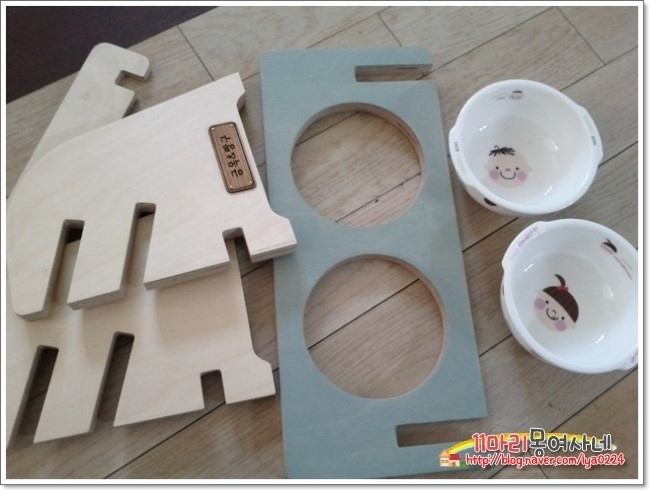
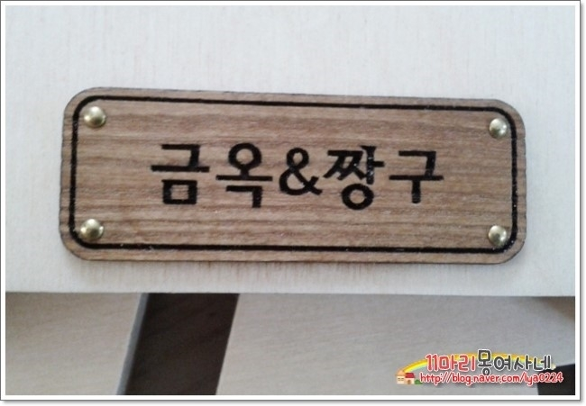
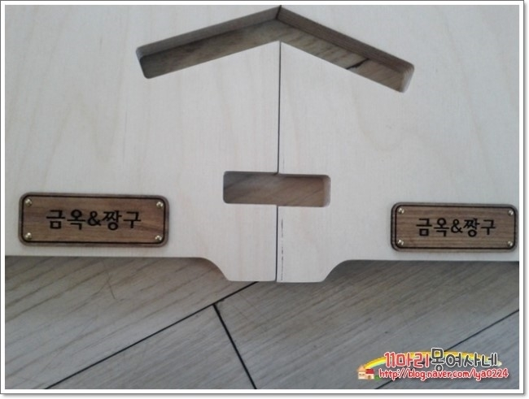
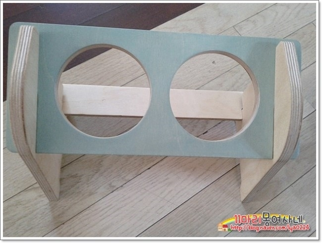
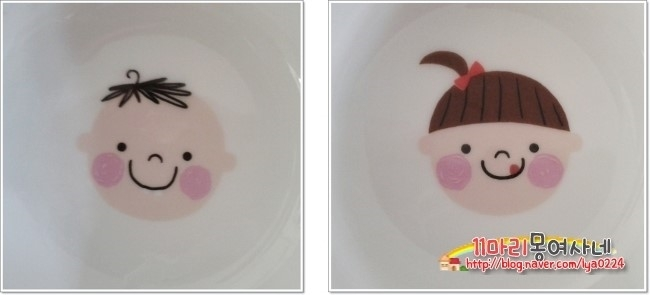
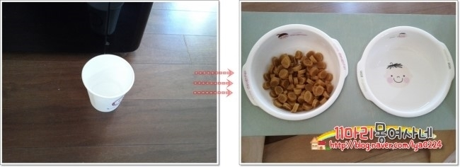
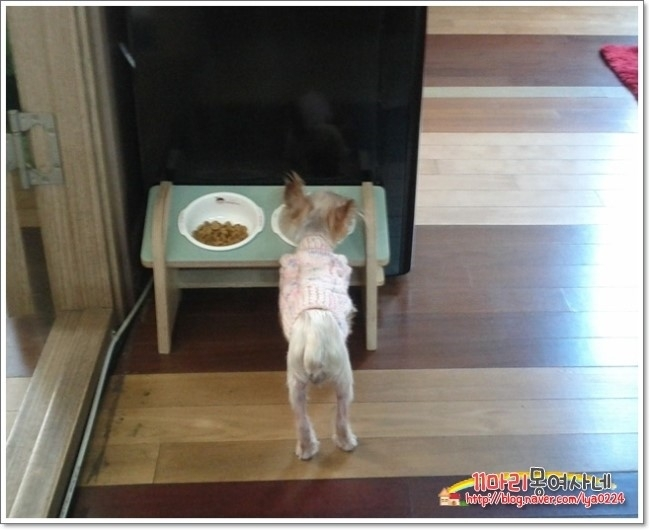

| 제목 | 두바보 각도조절 식기 | 작성자 | 몽여사 | 조회수 | 54 |
|---|---|---|---|---|---|
초보맘님들 보시고 참고하시라고 올려봐요 각도 조절 두구 식기~ 아가들이 밥먹기 참 편하게 생겼지요 견체 디자인학적 설계 ^^  금옥이껀 민트 색상~~  이름도 따로 써주셨네요^^  양사이즈에 이름이 각각~~  조립도 간단하지요  그릇이 넘 앙증맞아요 도자기 식기라 더 맘에 드네요 그릇은 개별구매도 가능하고 추가구매도 가격은 3천냥~~  사료랑 물이랑 담아봤어요  1킬로 짱구한테는 약간 높은 느낌~~ 이녀석은 뭘해도 지몸에 맞는거 찾기 힘들 ㅋㅋㅋㅋ 식기가 크지 않아서 10킬로 안쪽 개린이들한테 편안 식기일꺼 같아요 식탁이 경사진 관계로 물은 조금만 담아놔야해요 |
|||||